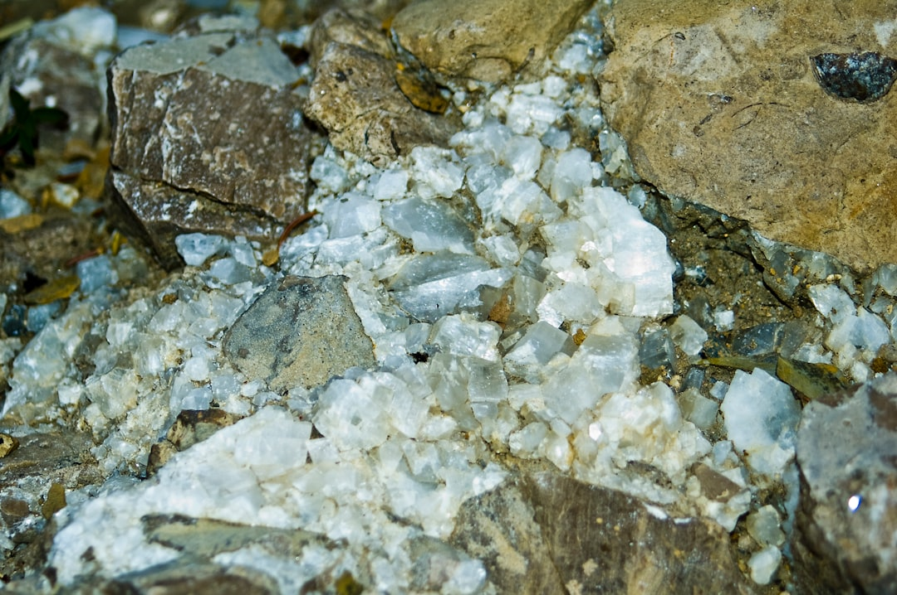

中 자원 카드, 반도체·방산 동시 타격…다음 타깃 소재 셋

중국은 2023년 8월 갈륨·게르마늄을 시작으로 2024년 안티몬·흑연, 2025년 들어 텅스텐·인듐·몰리브덴 등으로 수출통제 품목을 단계적으로 확대하고 있다. 현재 중국이 글로벌 생산량의 70% 이상을 점유한 통제 대상 소재는 12개를 넘어섰으며, 이 중 한국 수입 의존도가 80% 이상인 품목은 갈륨(95%), 게르마늄(82%), 비스무트(91%), 인듐(78%) 등 최소 4개다.
방산 공급망에서 특히 주목되는 소재는 텅스텐(탄두·장갑 침투체 소재)과 안티몬(탄약 난연제·적외선 감지 소재)이다. 중국은 2024년 9월 안티몬 수출통제를 시행했고, 이후 국제 안티몬 가격은 6개월 만에 톤당 1만 5000달러에서 3만 달러 수준으로 2배 올랐다. 한국 방산 기업들의 안티몬 재고는 통상 3~4개월치로, 대체 소싱 없이는 생산 차질이 현실화될 수 있다.
AI 서버와 산업용 로봇으로의 확전 조짐도 구체화되고 있다. 로봇 구동 핵심인 영구자석(네오디뮴·디스프로슘 희토류)은 중국이 글로벌 생산량의 85~90%를 차지하며, 2025년 들어 중국 당국이 희토류 가공 기업에 대한 수출 허가 심사를 강화하고 있다는 현장 신호가 포착된다. 인더스트리뉴스에 따르면 중국의 통제 전략이 '가격 조정'에서 '공급망 구조 개편'으로 목표가 이동하고 있다.
비스무트는 다음 통제 후보 소재로 현장에서 가장 자주 거론된다. 비스무트는 의료용 방사선 차폐재, 반도체 납땜(무연 솔더), 열전소자 소재로 쓰이며 한국 수입의 91%가 중국산이다. 중국 내 비스무트 주요 생산지가 후난·광둥 2개 성에 집중돼 있어, 지역 단위 생산 제한만으로도 글로벌 공급에 즉각적인 충격을 줄 수 있다.
중국의 수출통제 전략이 '가격 무기화'에서 '공급망 구조 재편'으로 목표를 이동시키고 있다는 점이 핵심 변화다. 갈륨·게르마늄 통제 초기에는 가격 급등이 주된 효과였지만, 지금은 특정 국가(일본) 또는 특정 용도(군사·방산)에 대한 선별 통제로 정교해지고 있다. 갈륨은 일본에만 4개월 만에 재개됐고 게르마늄은 계속 막혀 있는 것이 단적인 사례다. 이는 중국이 수출통제를 외교적 레버리지로 직접 활용하는 단계에 진입했음을 의미한다.
한국이 직면한 리스크는 '어느 소재가 다음 타깃이냐'보다 '통제 신호를 얼마나 빨리 읽느냐'의 정보 비대칭 문제다. 중국 상무부의 수출통제 공고가 나기 전에 이미 중국 현지 공급사들이 선적을 늦추거나 가격을 올리는 패턴이 반복되고 있다. 이 신호를 읽지 못하는 국내 구매팀은 공고 이후에야 대체 소싱을 시작해 3~6개월의 조달 공백이 발생한다.
비중국 텅스텐·안티몬 생산국인 베트남(텅스텐 세계 2위), 볼리비아·러시아(안티몬 대체 공급)가 단기 반사 수혜를 받는다. 특히 베트남산 텅스텐 정광은 2024년 하반기부터 한국·일본 방산 기업들의 대체 소싱 문의가 급증하고 있어 공급 타이트 현상이 선반영되고 있다.
국내에서는 고려아연이 가장 넓은 수혜 범위를 갖는다. 갈륨(2028년 연 15.5t 양산 목표)뿐 아니라, 아연 제련 공정 부산물로 인듐·비스무트를 동시 회수할 수 있는 구조다. 인듐과 비스무트가 중국 통제 소재로 추가 지정될 경우 고려아연의 부산물 회수 라인이 즉각적인 상업 가치를 갖게 된다.
한국 방산 기업 중 안티몬 재고 관리를 자체적으로 하지 못하는 중소 협력사들이 가장 직접적인 피해를 받는다. 한화·LIG넥스원 같은 1차 방산업체는 자체 조달망이 있지만, 2·3차 부품사는 안티몬 재고를 통상 1~2개월치만 유지하는 경우가 많다. 가격이 2배 오른 안티몬을 추가 확보하는 비용이 중소 협력사에는 영업이익을 잠식하는 수준이다.
AI 서버용 희토류 영구자석을 사용하는 국내 로봇·모터 부품 기업들도 리스크에 노출된다. 현재 국내에 희토류 영구자석을 가공·소결하는 기업은 극소수이며, 중국산 소결 자석 완제품 수입 의존도가 75% 이상이다. 중국이 희토류 가공 단계까지 통제를 확대할 경우 국내 로봇 부품 산업의 생산 원가는 20~35% 상승할 수 있다.
당장 실행해야 할 것은 '다음 통제 후보 소재 3종'에 대한 재고 전략이다. 비스무트(무연 솔더·열전소자), 인듐(ITO 타깃·박막 태양광), 텅스텐(반도체 배선재·방산 소재) 각각의 국내 재고 현황을 지금 점검해야 한다. 이 세 소재는 중국 수출통제 공고가 나기 6~12개월 전에 이미 중국 내 재고 적체·가격 이상 신호가 나타나는 패턴을 보였다.
공급망 다변화는 단일 대체 소싱이 아닌 '지역별 비중 분산'으로 설계해야 한다. 안티몬은 볼리비아·러시아, 텅스텐은 베트남·캐나다, 인듐은 캐나다·페루를 각각 최소 20% 비중으로 계약 선점하는 것이 목표다. 중국산 100%에서 단번에 탈출하는 것은 불가능하지만, 30~40% 비중을 비중국산으로 교체하는 것만으로도 통제 리스크의 충격을 반감시킬 수 있다.
실제 조달 현장에서는 — 중국 공급사가 '일시적 물량 부족'을 이유로 선적을 3~4주 지연하기 시작할 때가 수출통제 공고 직전 신호인 경우가 많다. 2023년 갈륨, 2024년 안티몬 모두 이 패턴이 먼저 나타났다. 조달팀이 중국 공급사의 리드타임 변화를 주간 단위로 모니터링하고, 리드타임이 2주 이상 늘어나면 즉시 비중국 대체 소싱 프로세스를 가동하는 내부 규정을 지금 만들어야 한다.
이 포스팅은 쿠팡 파트너스 활동의 일환으로 수수료를 제공받습니다.